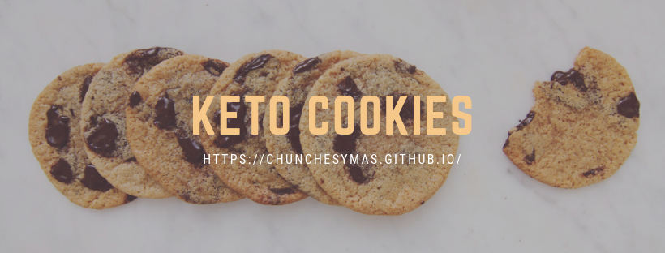
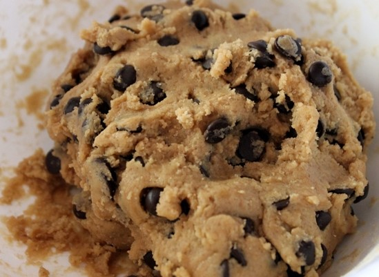

Keto Cookies 🍪

Hay días en los que seguir la dieta parece imposible, por lo que es permitido para algunos tener un cheat day , sin embargo al estar en cetosis lo menos que quieres es salir de este estado por lo que uno tiene que recurrir a los antojos sanos como lo son estas galletas low carb. Además de ser deliciosas son muy fáciles y rápidas de preparar, de esta receta salen 12 galletas aproximadamente, sin embargo no olviden tener criterio y contar los carbohidratos 😉.
Ingredientes
- 1/3 de taza de harina de coco
- 1/4 de mantequilla derretida
- 1/8 de endulzante bajo en carbohidratos de su preferencia
- 2 huevos sin refrigerar
- 1/3 de taza de chispas de chocolate amargo Hershey´s
- 1 cucharadita de extracto de vainilla
- 1/4 de cucharadita de sal
Preparación
1.- En un bowl mezcla la harina de coco, mantequilla, azúcar, vainilla, sal y huevos hasta formar una masa homogénea. Añade las chispas de chocolate y revuelve hasta distribuirlas de manera uniforme.

2.- Coloca aceite de coco o papel para hornear en la bandeja para que no se peguen las galletas, después con una cuchara para galletas coloca las bolitas de masa en la bandeja para hornear y aplástalas un poco con las manos.

3.- Puedes hacerlas en horno precalentando a 180°C y horneando a 180°C de 12 a 14 minutos hasta que los bordes estén dorados. En horno de convección hornéalas por 12 minutos y esta misma receta las puedes usar para hacer cupcakes para que quede una textura mas esponjosita. Déjalas enfriar por 10 minutos y a disfrutar de estas galletas low carb.
Si les gustó compártanla en sus redes sociales y que disfruten mucho sus galletitas.
Mis Herramientas de trabajo
Laptop: Acer Aspire R15 Convertible
Cámara: Nikon D5300
Celular: Oneplus 3T